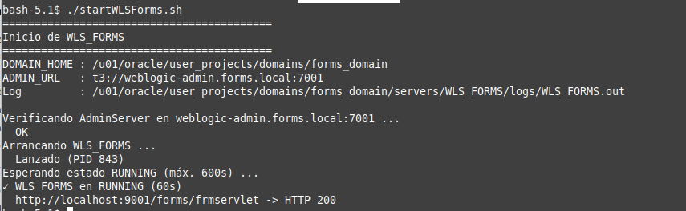
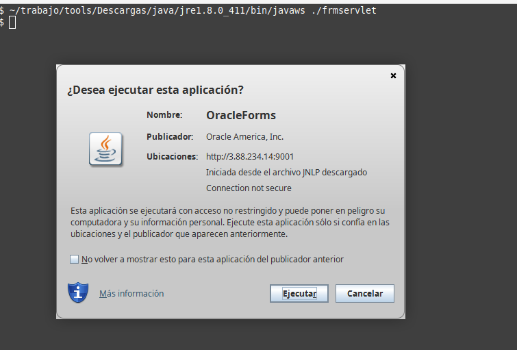
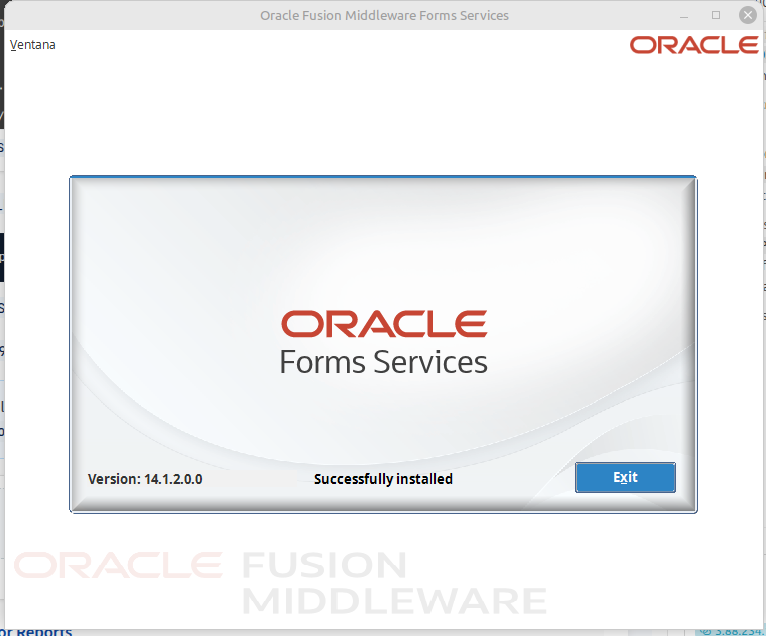

forms-server sobre el cluster forms_report, reutilizando ECR y EFS
Visión general
Guía paso a paso para crear la task definitionforms-server
y su servicio en el cluster forms_report, registrado en Cloud Map como
weblogic-forms.forms.local, y arrancar el managed server WLS_FORMS.
Parte de lo creado en la guía del Contenedor AdminServer (imagen ECR, security group,
EFS, rol, namespace, cluster, red y hostnames), que aquí se referencia en lugar de repetirse.
Misma imagen, mismo EFS, servicio Forms listo en Fargate.
0 Requisitos y valores fijosPendiente
El contenedor Forms se apoya en todo lo creado en la guía del Contenedor AdminServer:
la infraestructura común del cluster, el cluster y el AdminServer en ejecución con su nombre DNS. Esta guía solo cubre
lo propio de Forms; lo compartido se referencia a la guía admin.
0.1 · Requisitos ya creados en la guía AdminServer
Elemento
Dónde se crea
Imagen ECR forms-docker (la misma para los tres contenedores)
La task definition forms-server describe el contenedor del managed server WLS_FORMS. Sigue
el mismo asistente que la del AdminServer (Admin 3, donde se explica cada
sección); aquí solo cambian el nombre, los puertos, las variables de entorno y la carpeta de scripts.
ECS → Definiciones de tareas → Crear nueva definición de tarea.
Definición completa de la última revisión en el anexo JSON (forms-server:10).
1.1 · Familia, Fargate, tamaño y roles
Mismo tamaño y mismos roles que el AdminServer: el rol de tarea ecs-forms-admin-task-role se reutiliza
para ECS Exec (ver Admin 3.2).
Campo
Valor
Familia
forms-server
Tipo de inicio / SO
AWS Fargate · Linux/X86_64
CPU / memoria
2 vCPU / 4 GB
Rol de tarea
ecs-forms-admin-task-role
Rol de ejecución
ecsTaskExecutionRole
Paso 1.1a — Familia forms-serverPaso 1.1b — Fargate, Linux/X86_64, 2 vCPU, 4 GBPaso 1.1c — Rol de tarea ecs-forms-admin-task-role + ejecución ecsTaskExecutionRole
1.2 · Contenedor: imagen y puertos
Misma imagen ECR que el AdminServer (Admin 1.1), referenciada por digest.
Los puertos son los del managed server y su Node Manager:
Además de las rutas de Oracle y del dominio, el contenedor Forms necesita saber dónde está el AdminServer
y qué managed server arrancar. Los scripts startWLSForms.sh y entrypoint.sh leen estas variables.
ADMIN_SERVER_HOST=weblogic-admin.forms.local es el nombre que Cloud Map registra para el servicio
admin (Admin 4.6). Así Forms localiza al AdminServer sin
IP fija, aunque la tarea admin cambie de IP en cada despliegue.
No redefinir PATH en la task definition (ver Admin 3.4).
ADMIN_PASSWORD en claro solo para pruebas: migrar a Secrets Manager.
Paso 1.3 — Variables de entorno de forms-server
1.4 · Comando y directorio de trabajo
Igual que en el AdminServer, el contenedor arranca con sleep infinity para que la tarea quede viva y se
pueda entrar por ECS Exec a arrancar WLS_FORMS a mano (por qué, en
Admin 3.5).
Campo
Valor
Punto de entrada
sh,-c
Comando
sleep,infinity
Directorio de trabajo
/u01/oracle
Paso 1.4 — Punto de entrada sh,-c, comando sleep,infinity, directorio /u01/oracle
1.5 · Almacenamiento efímero + volúmenes EFS
Mismo EFS y mismas carpetas de dominio y aplicaciones que el AdminServer (concepto en
Admin 3.6). La única diferencia es la carpeta de scripts:
scripts/forms, con los scripts propios del managed server.
Mismas rutas en el contenedor que el AdminServer (Admin 3.7).
Volumen
Ruta en el contenedor
efs-domains
/u01/oracle/user_projects/domains
efs-app
/u01/oracle/user_projects/apps
efs-scripts
/u01/oracle/scripts
Crear la definición: la primera quedó como forms-server:2; el servicio usa forms-server:4.
Paso 1.6a — Puntos de montaje de domains, app y scriptsPaso 1.6b — Pantalla final antes de crear la definiciónPaso 1.6c — Confirmación: forms-server:2
2 Crear servicio + Service DiscoveryHecho
El servicio forms-server mantiene una tarea Forms en ejecución en el cluster forms_report.
El asistente es el mismo que el del servicio admin (Admin 4, con cada
sección explicada); aquí se indican los valores de Forms y lo que cambia: el nombre de Service Discovery y la
apertura del puerto 9001.
2.1 · Crear el servicio
Cluster forms_report → pestaña Servicios → Crear.
Familia forms-server, revisión 4; nombre del servicio forms-server; tareas deseadas 1.
Paso 2.1a — ClústeresPaso 2.1b — Cluster forms_report → Crear servicioPaso 2.1c — Familia forms-server, revisión 4, nombre forms-server
Registra la tarea Forms en Cloud Map como weblogic-forms.forms.local: es el nombre que el AdminServer usa
para contactar al Node Manager de FormsMachine y el que usa Coherence entre Forms y Reports. Mismo
procedimiento que weblogic-admin (Admin 4.6).
Campo
Valor
Espacio de nombres
Existente: forms.local
Nombre de detección
weblogic-forms
Registro DNS / TTL
A / 15
Solo se puede asociar al crear el servicio; después habría que recrearlo.
[ Captura pendiente: Service Discovery weblogic-forms ]
Paso 2.3 — Service Discovery weblogic-forms
2.4 · Redes del servicio
Misma red que admin: solopub-A, SG forms-sg-ecs e IP pública activada
(Admin 4.9). La ruta a la BD en Pub-RT ya existe
(Admin 4.10); no asociar database-A.
2.5 · Regla de entrada 9001 en forms-sg-ecs
Para acceder a Forms desde fuera hay que abrir su puerto HTTP en el security group compartido
(Admin 1.2). No se hace en el asistente del servicio, que solo
asocia el SG: las reglas se editan aparte en EC2 → Grupos de seguridad, sin recrear el servicio.
La regla interna Todo el tráfico (Node Manager, managed servers, Coherence) ya cubre la comunicación
entre admin, forms y reports.
Paso 2.5a — EC2: entrar a Grupos de seguridadPaso 2.5b — Seleccionar forms-sg-ecsPaso 2.5c — Editar reglas de entradaPaso 2.5d — Regla TCP 9001 (Forms HTTP)Paso 2.5e — Regla guardada
0.0.0.0/0 solo en DEV. Antes de QA/PROD restringir los orígenes:
Puerto
Uso
Origen recomendado
9001 / 9501
Forms HTTP / HTTPS
IP de administración /32 o red corporativa
9991
Puerto de administración del managed
Solo regla interna del SG
5556
Node Manager
Solo regla interna del SG
2.6 · Crear
Paso 2.6 — Etiquetas opcionales y botón Crear
3 Verificar Running y ECS ExecHecho
Igual que en admin (Admin 5): esperar la tarea en Ejecutando
(la descarga de la imagen tarda ~5 min) y entrar con ECS Exec. Cambian el ID de la tarea y el contenedor:
df -h | grep -E 'domains|apps|scripts'
ls /u01/oracle/scripts # scripts de forms: startNodeManager.sh, startWLSForms.sh…
ls /u01/oracle/user_projects/domains
Paso 3a — Servicio forms-server creado; implementación en cursoPaso 3b — Pestaña Tareas: tarea admin en ejecución y forms-server:4 arrancandoPaso 3c — 1/1 tarea Ejecutando (forms-server:4)Paso 3d — ECS Exec a forms-server y montajes del EFS
4 Verificar DNS Cloud MapHecho
Antes de arrancar WLS_FORMS, confirmar desde el contenedor Forms que los nombres de Cloud Map resuelven y
que el dominio ya usa los FQDN. El ajuste del dominio se hace una sola vez desde admin
(Admin 6); aquí solo se verifica.
getent hosts weblogic-admin.forms.local # IP de la tarea admin
getent hosts weblogic-forms.forms.local # IP VPC de esta tarea (eth1), no 169.254.x.x
timeout 5 bash -c 'echo >/dev/tcp/weblogic-admin.forms.local/7001' && echo OK || echo FAIL
/u01/oracle/scripts/set-cloudmap-hostnames.sh --check 2>/dev/null \
|| grep -n 'weblogic-' $DOMAIN_HOME/config/config.xml $DOMAIN_HOME/nodemanager_forms/nodemanager.properties
Si el dominio conserva nombres cortos, Node Manager y los servidores fallan con
java.net.UnknownHostException: weblogic-admin: Name or service not known y
<SEVERE> <Fatal error in NodeManager server>; en WLS_REPORTS además
Hostname weblogic-reports ... failed to resolve y Coherence
Failure to join a cluster for 300 seconds. La tarea ECS sigue en Ejecutando por
sleep infinity. Solución: Admin 6.
5 Arrancar Node Manager y WLS_FORMSHecho
Con el AdminServer en RUNNING (Admin 7), se arranca primero el Node Manager de
FormsMachine (para que el AdminServer pueda controlar WLS_FORMS) y luego el managed server.
Desde la sesión ECS Exec del Paso 3:
/u01/oracle/scripts/startNodeManager.sh # Node Manager con nodemanager_forms/
/u01/oracle/scripts/startWLSForms.sh # arranca WLS_FORMS y espera RUNNING (--no-wait para no esperar)
startWLSForms.sh verifica primero que el AdminServer responda en
weblogic-admin.forms.local:7001, lanza WLS_FORMS en segundo plano (salida en
servers/WLS_FORMS/logs/WLS_FORMS.out) y espera hasta 600 s el estado RUNNING. Al final comprueba
http://localhost:9001/forms/frmservlet: HTTP 200 confirma que Forms responde.

Paso 5a — ./startWLSForms.sh: WLS_FORMS en RUNNING (60 s) y /forms/frmservlet → HTTP 200
Para monitorear el inicio de WLS_FORMS en el log del managed server:
El arranque está completo con <Server state changed to RUNNING.> (BEA-000365).
Para arrancar sin pedir credenciales, crear $DOMAIN_HOME/servers/WLS_FORMS/security/boot.properties
(username=weblogic / password=<clave>); WebLogic lo cifra en el primer arranque.
Validar Forms desde la máquina cliente
Forms 14.1.2 se ejecuta en el cliente con Java Web Start (JNLP), no dentro del navegador.
Abrir en el navegador la URL del servlet en modo webstart, con la IP pública de la tarea
forms-server (pestaña Redes de la tarea; cambia en cada despliegue):
El servidor responde con un descriptor JNLP que el navegador descarga como archivo frmservlet.
Ese archivo indica al cliente de dónde descargar frmall.jar y con qué parámetros conectarse a
WLS_FORMS. Se ejecuta en la máquina cliente con Java 8:
$JAVA_HOME/bin/javaws ./frmservlet
Java Web Start pide confirmación para ejecutar OracleForms (publicador Oracle America, Inc.). El aviso
Connection not secure se debe a que la conexión es HTTP (9001), no HTTPS (9501).

Paso 5b — javaws ./frmservlet: confirmar Ejecutar
Al aceptar se abre la aplicación Forms. Sin un formulario configurado en formsweb.cfg, muestra la pantalla de prueba de la instalación:

Paso 5c — Oracle Forms Services 14.1.2.0.0: Successfully installed
Requiere JDK/JRE 8 x64 con javaws (Oracle JRE 8, IcedTea-Web u OpenWebStart): Java 11+ no
incluye Java Web Start. Ejecutar el archivo poco después de descargarlo: el JNLP se borra tras usarse
(jnlp.delete.jnlp.file) y la sesión puede expirar.
Arranque automático de WLS_FORMS al iniciar la tareaHecho
Validado el arranque manual, se cambia el comando del contenedor para que la tarea inicie WLS_FORMS sin
intervención, igual que el AdminServer en Admin 7d: se crea una
nueva revisión de la task definition y se actualiza el servicio.
ECS → Definiciones de tareas → forms-server → última revisión → Crear nueva revisión.
Contenedor forms-server → Configuración de Docker:
Punto de entrada: vacío.
Comando: /u01/oracle/scripts/startWLSForms.sh,-keep (reemplaza a sleep,infinity).
Con -keep, si el AdminServer aún no responde (tareas lanzadas a la vez), el script lo espera hasta
WAIT_TIMEOUT (600 s) antes de arrancar WLS_FORMS; la tarea sigue viva aunque el managed server
falle, para poder entrar por ECS Exec a revisar. Sin -keep la tarea termina al fallar o al alcanzar RUNNING,
por lo que no sirve como comando del contenedor.
El script se ejecuta desde el EFS (/u01/oracle/scripts): debe existir con permiso de ejecución
(chmod +x startWLSForms.sh). Requiere el boot.properties de WLS_FORMS; el arranque
no usa Node Manager, que solo hace falta para controlar el server desde la consola.
Última revisión registrada (forms-server:10), exportada en aws-ecs/forms/forms.json. Se muestra en formato registrable:
sin los campos de solo lectura que agrega ECS al exportar (taskDefinitionArn, revision, status,
requiresAttributes, registeredAt/By…), por lo que puede pegarse en ECS →
Crear nueva definición de tarea con JSON o registrarse por CLI. Sustituir <clave> por la contraseña real. La imagen queda fijada por digest (@sha256:…), tal como la resolvió ECS.
Corresponde al Paso 1 con el comando de arranque automático de 5d.
Los comandos de infraestructura compartida (subnets, rutas, security groups, EFS, Session Manager Plugin) están en el
anexo CLI de admin. Aquí solo los específicos de forms-server.
Ante errores tipo ORA-12170 (TCP connect timeout) desde el contenedor hacia Oracle
(192.168.229.137:1521), estos pasos permiten descartar task definition y security group
antes de escalar a soporte de redes.
La task definition no define reglas de firewall. La red la define el servicio ECS
(VPC, subnets, SG, IP pública) junto con las tablas de rutas, NACL y VPN de la VPC.
Resultado esperado: solo pub-A, SG forms-sg-ecs, IP pública ENABLED; egress
All → 0.0.0.0/0 (el SG no bloquea la BD).
2 · Ruta de pub-A
Debe existir 192.168.229.137/32 → pcx-0ad20c217472c7080 en Pub-RT
(Admin 4.10; comando en el anexo CLI de admin).
Sin ella, el tráfico a la BD sale por la ruta por defecto al IGW y termina en ORA-12170.
3 · Prueba desde el contenedor
# TCP (no requiere libaio)
timeout 5 bash -c 'echo >/dev/tcp/192.168.229.137/1521' && echo OK || echo FAIL
# sqlplus (requiere libaio en la imagen)
$ORACLE_HOME/bin/sqlplus USUARIO/PASS@192.168.229.137:1521/METAPRD
libaio debe ir en la imagen Docker, no instalarse a mano en la tarea: el filesystem del contenedor es
efímero y lo instalado con yum / microdnf en ECS Exec se pierde al recrear la tarea. Si
sqlplus falla con libaio.so.1: cannot open shared object file, falta el paquete en la imagen.
Un timeout indica que el paquete no llega al listener (rutas / firewall del destino), no un usuario o clave incorrectos.
4 · Resumen para soporte de redes
Elemento
Resultado
¿Bloquea BD?
Task definition
No define firewall
No
SG forms-sg-ecs egress
All → 0.0.0.0/0
No
Servicio: solo pub-A
Topología recomendada
—
Pub-RT
192.168.229.137/32 → pcx + IGW
No (tras el ajuste)
Firewall del listener Oracle
Validar TCP 1521 desde el CIDR de las tareas
Posible
★ Lecciones críticas
Las lecciones de infraestructura comunes a los tres contenedores (rol de tarea, timeout de ECR, espacio efímero, NFS 2049,
rutas EFS, sleep infinity, Service Discovery, solo pub-A + ruta BD, hostnames) están en las
lecciones críticas de admin. Propias de Forms:
ADMIN_SERVER_HOST (Paso 1.3) — debe ser weblogic-admin.forms.local; el short name no resuelve en la VPC.
Coherence y Machines (Pasos 2.3 y 4) — weblogic-forms y weblogic-reports también necesitan Service Discovery y FQDN; un nombre sin resolver deja al managed fuera del WKA y no arranca. Coherence descubre miembros por UDP 7574: la regla interna del SG debe ser Todo el tráfico, no solo TCP.
libaio / net-tools / nano en la imagen — libaio es necesaria para sqlplus; incluir los paquetes en el Dockerfile y regenerar la imagen ECR, no instalarlos por ECS Exec.
ECS Running ≠ WebLogic RUNNING (Paso 5) — el proceso principal puede ser sleep infinity con Java caído; validar el log de WLS_FORMS.
Zombies <defunct> — ya están muertos; no se limpian con kill si el padre es sleep infinity.
“Inaccessible” en Remote Console — a menudo es la comunicación Admin ↔ managed (DNS/JMX), no que el managed esté caído.
FRM-93500 — el JNLP llega al servlet; falla el runtime frmweb en el servidor (default.env, librerías, rutas).
Cliente JNLP en Linux (Paso 5) — JDK 8 x64 + javaws (IcedTea / OpenWebStart); JDK 17 no trae Java Web Start.
Usuario oracle (Paso 3) — arrancar Node Manager, WLS_FORMS y scripts como oracle (--command "su -s /bin/bash oracle"), conservando las variables de la task definition. Evitar root.
boot.properties de WLS_FORMS (Paso 5) — en servers/WLS_FORMS/security/. ADMIN_USER / ADMIN_PASSWORD del compose no bastan, y startManagedWebLogic.sh reinicia WLS_USER / WLS_PW. No confundir con el de Node Manager (.../data/nodemanager/).
URL de BD fija en el dominio — pendiente por resolver. La URL JDBC queda en config/fmwconfig/jps-config-jse.xml, config/jdbc/opss-datasource-jdbc.xml, config/jdbc/WLSRuntimeSchemaDataSource-jdbc.xml y otros; WebLogic no resuelve variables de entorno en esos XML. Objetivo: parametrizarla al arrancar la tarea (sed / envsubst o WLST offline).
Redespliegue — nueva tarea = nueva IP; Cloud Map la actualiza (respetar el TTL de 15 s).
Documentación ECS Forms — capturas en assets/. Ver también ECS Reports.